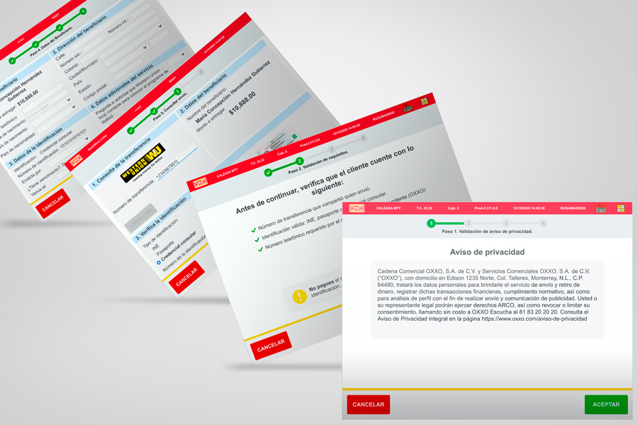

Grupo Ti México · Cliente OXXO
De un flujo confuso a un proceso claro: rediseño de Retiro de Remesas en XPOS
Rediseñé el flujo de Retiro de Remesas dentro del sistema XPOS de OXXO una arquitectura mixta .NET + Delphi/VCL después de identificar, vía reportes del PO y una investigación de campo propia como clienta, que los cajeros confundían mensajes de acción con mensajes de error y cancelaban la operación ante un formato largo y poco claro.
